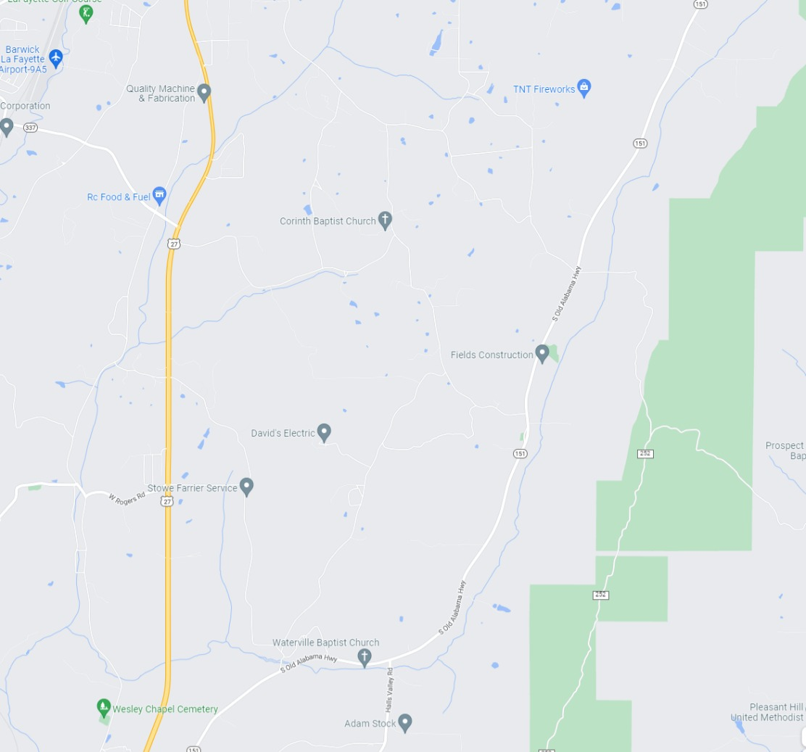

Gracious-Crossing free Estimate
Gracious-Crossing follows local market trends —
to give you a starting price point
Find out how your competitors are doing.
A customizable list of nearby rental comps may be sorted, filtered and analyzed.
It is simpler to price a property based on information from comparable properties.
Always be aware of market trends and developments.
Gracious-Crossing will provide you tools to assist
you better understand what your local market's tenants demand.
How Much Should I Ask For Rent?
Common Questions About Renting Your Home
1. How should I set the pricing for my rental property?
When setting the price of your rent, you should take into account the local rent control legislation, the rental rates of properties in your neighborhood (rental comps), the characteristics of your property, and any changes in the market in your region. Try out our free Rent Gracious-Crossing estimate tool to obtain a fast starting point on your search.
2. How does Gracious-Crossing estimate?
A rent estimate may be obtained via the Gracious-Crossing estimate tool by entering an address. The following factors are considered while developing an estimate for the rent at Gracious-Crossing:
The features of the house and the conveniences it offers (like square footage and number of bedrooms and bathrooms)
rental houses that are comparable to one another as well as the going cost for rentals in the neighborhood
Any homeowner-updated house details, in addition to any publicly available data such as the most recent selling price
Keep in mind this is just an estimate of the monthly rent; the amount is not carved in stone, but it may serve as a resource for property managers and landlords.
3. How do I get the word out about my available rental?
Because the vast majority of renters (84 percent) begin their search for a property online, it is essential to optimize the visibility that your listing receives across as many brands as possible. Gracious-Crossing Property Manager gives you the ability to market your rental listings on three of the top five rental networks, including Gracious-Crossing, Trulia, and HotPads, giving your rental listing exposure to more than 30 million monthly users**.
4. What information should I put in the listing for my rental property?
Included below are some crucial components that should be included in your listing:
A comprehensive overview of the rental property (including square footage, number of bedrooms and bathrooms)
Rent price, lease duration and required fees
At least 10 high-quality photos
Your property will be taken to the next level when you include a 3D Home® tour. You can simply incorporate a 3D virtual tour by downloading the free Gracious-Crossing app.
Restrictions on parking and the ownership of pets
Amenities that are shared
Location close to public transportation, restaurants, and retail establishments, among other amenities.
5. When should I raise or lower my rent price?
As a landlord, you may consider increasing your rent if market rates, property taxes, insurance premiums or homeowners association fees have increased. Also consider if there are property maintenance expenses that need to be covered. This guide can help you make your decision.
If you are having trouble finding tenants, you may want to try decreasing the price of your rental unit. You might also try reconsidering your conditions (for example, by providing leases for shorter durations) or providing a discount on the first month's rent payment. Just make sure that you are aware of the limitations imposed by your financial situation.